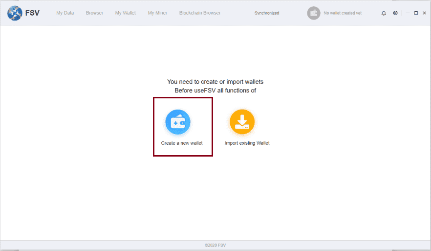

-
简体中文
如何在奇亚矿机上进行一机双挖
This paper introduces how to carry out double excavation on Chia mining machine, that is, to dig the mines of Chia and interstellar copyright chain at the same time.
First of all, we need to hang a separate hard disk on the digging machine to store the interstellar copyright chain mining program.The data generated by the subsequent interstellar copyright chain will be saved on this disk.
Next, the installation and mining instructions of interstellar copyright chain are introduced:
- 1、Program installation
-
1. Download address: Official Website https://www.fs.video/2. Download and installation stepsa) After entering the official website, drop down to the bottom and select Download PC clientb) Three regional options will be displayed. Select any one and click to download: fsv-setup-yy.m.dd.exe filec) Double click the EXE file to install
d) After installation, open the front page of the program, as shown in the following figure:
1) If there is no wallet account, create a new account and click [create a new wallet]
2) If you already have a standing account, you can import the existing account and click [import existing wallet]
e) Create a new accountf) After the creation is successful, you will go to the backup auxiliary word screen and select backup / no backup according to your own situationg) If the picture blocks are not synchronized, you cannot upload or download videos
You can check whether the synchronization is completed in the following screen
- 2、My miner
-
1. Hardware mininga) To start Hardware mining, you need to select an income wallet and click the [starting mining] buttonNote: after the release of the film, the copyright will give 5% - 80% of the public who provide loans and hard drives. The wallet selected here is the wallet that will be divided into income laterb) After clicking, a prompt will pop up to restart the program. You need to restart the program to take effect2. Dpos mininga) Click calculate the amount required for mortgage firstb) The screen will display the minimum number of tokens that should be mortgaged for the current application to become a dpos node, and then click [application for POS mining]Note: you can apply to become a POS miner only after you have been online for 24 hoursc) After entering the correct data, click [apply to be a POS miner], and you can become a POS miner after successful verificationNote: the mortgage amount should be greater than or equal to the minimum self mortgage value;After becoming a POS miner, a handling charge of 0.001 will be deductedd) The current wallet can also entrust other dpos nodes to pledge. Click dpos node delegatione) The screen will display the top 10 data with the maximum self mortgage value of the node and no imprisonment within one week. Click [Commission]f) The POS mortgage screen will pop up. Enter the amount and password to be mortgaged, and click submit to mortgage successfullyNote: a handling fee of 0.001 will be deducted for each mortgage
g) POS Mortgage
1) The total mortgage amount on each node is displayed. Click return to redeem all the mortgage values on each node. Similarly, click collect
2) Click mortgage details to view mortgage data on all nodes
Note: a handling fee of 0.001 will be deducted each time when redeeming the mortgage and receiving the rewardh) Voting rights: the voting rights of all nodes will be displayed hereNote: if there are frozen voting rights, an error will be reported during redemption and cannot be redeemedi) If 300 blocks are offline, the dpos node will be imprisoned, confiscated and mortgaged by 0.1% each time, and imprisoned for mining machines for 24 hours (no income can be obtained during imprisonment). If you want to recover, you need to manually lift the ban after 24 hoursNote: when imprisoned, the status of the place is in prison3. Blockchain hard disk mininga) The blockchain hard disk can be obtained by destroying the FSV. Only by holding the blockchain hard disk can you participate in the mining of blockchain hard disk, and you need enough space to release resourcesNote: 36000 fsvs (14400 blocks) are dug every day, of which 6000 will be distributed to dpos nodes and 30000 to miners holding blockchain hard disks. The larger the holding space, the higher the proportionb) Redeem disk space
1) Click [+ destroy FSV exchange hard disk space of blockchain] in the screen
2) The screen "destroy FSV and replace the stored rights and interests on the chain" will pop up3) After entering the space and password to be redeemed, click [confirm]Note:
The FSV price corresponding to 1m in the screen is calculated according to the, not a fixed price;
A handling charge of 0.001 will be deducted for each exchange.
4) After successful redemption, the total space corresponding to the current wallet will be displayed in the screen5) Click the [destroy records] button to view the records of all exchange spaces in the whole network6) When the height of the public chain block increases by 14400, 30000 fsvs will be excavated from the mine pool, and then rewards will be allocated according to the disk space occupied by each wallet7) If the currently available amount has a value, you can click the [receive] button to receive itNote: 0.001 handling charge will be deducted for each collection
本文介绍如何在奇亚矿机上进行双挖，即同时挖奇亚和星际版权链的矿。
首先我们要在挖奇亚的机器上单独挂一块硬盘，用来存放星际版权链挖矿程序。后续星际版权链产生的数据都会保存在这个盘。
接下来介绍星际版权链的安装和挖矿说明
- 一、程序安装
-
1、下载地址：官网 https://www.fs.video/2、下载和安装步骤a) 进入官网后，下拉到最底部，选中：Download PC Clientb) 会显示出3个区域选项，任意选择一个点击，即可下载：FSV-Setup-yy.m.dd.exe文件c) 双击exe文件进行安装
d) 安装后，打开程序的首页，如下图：
1) 没有钱包账号，创建新的账号，点击【Create a new wallet】
2) 如果已经有站好，可导入已有的账号，点击【Import existing wallet】
e) 创建新账号f) 创建成功后，会到备份记助词画面，根据自己的情况选择备份/不备份g) 如果画面区块有没同步完成的情况，则不能上传视频 或 下载视频等操作
可在如下画面查看，是否同步完成
- 二、我的矿机(My Miner)
-
1、硬件挖矿(Hardware mining)a) 先开启硬件挖矿，需要选一个挖矿收益转入钱包(Income wallet)，最后点【开始挖矿（Startmining）】按钮注意：版权所有放在发布影片后，会给与提供贷款和硬盘的大众5%-80%的分成，此处选的钱包：是之后分成收入的钱包b) 点击后，会弹出提示让重新启动程序，需要重新启动程序才能生效2、DPoS挖矿(DPoS minning)a) 需要先点【计算抵押所需金额(Calculate the amount required for mortgage)】b) 画面上会显示出当前申请成为DPOS节点，最少应该抵押多少token，再点击【申请POS挖矿(application for POS mining)】注意：累计在线24小时后，才可以申请成为POS矿工c) 输入正确数据后，点【申请成为POS矿工(Apply to be a POS miner)】，验证成功后即可成为POS矿工注意：抵押金额(Mortgage amount)要大于或等于最小自抵押值(Minimum self-mortgage value)； 成为POS矿工后，会扣除0.001的手续费d) 当前钱包也可以委托别的DPoS节点进行抵押，点【DPoS节点委托(DPoS Node delegation)】e) 画面中会显示出：节点自抵押值最大，且一周之内没有被监禁过的前10条数据，点击【委托(Commission)】f) 会弹出：POS抵押画面，输入要抵押的金额 和 密码后，点击【提交】即可抵押成功注意：每次抵押会扣除0.001的手续费
g) PoS抵押
1) 显示的是各节点上抵押的总抵押额，点【返还】按钮，会把各节点上的抵押值全部赎回，同理点【领取】也是一样
2) 点击【抵押明细】可以查看所有节点上的抵押数据
注意：赎回抵押和领取奖励每次都会扣除0.001的手续费h) 投票权：该处会显示全部节点的投票权注意：如果有冻结的投票权，则赎回时会报错，不能进行赎回i) 离线300个区块，则该DPoS节点会被监禁，每次会被罚没抵押0.1%，并被监禁矿机24小时（监禁期间无法获得收入），想要恢复需24小时后手动解禁注意：被监禁时，该处的状态为监禁中3、区块链硬盘挖矿(Blockchain hard disk mining)a) 通过销毁fsv可获取区块链硬盘，持有区块链硬盘才可以参与区块链硬盘挖矿，且需要拥有足够的空间才能发布资源注意：每天挖36000枚fsv（14400个区块），其中6000枚会分给DPoS节点，30000枚分给持有区块链硬盘的矿工，持有空间越大，分到的比例越高b) 兑换磁盘空间
1) 点击画面中，【+销毁fsv兑换区块链硬盘空间】(DestructionfsvExchange hard disk space of blockchain)
2) 会弹出：销毁 fsv 换链上存储权益画面3) 输入要兑换的空间和密码后，点【确定(Confirm)】注意：画面中1M 对应的fsv价格是根据计算得出的，不是固定价格；
每次兑换会扣除0.001的手续费。
4) 兑换成功后，会在画面中显示当前钱包所对应的总空间5) 点【销毁记录(Destroy records)】按钮，可查看全网所有的兑换空间的记录6) 公链区块高度每增加14400时，就有30000枚fsv从矿池被挖出，然后会根据每个钱包所占有的磁盘空间分配奖励7) 如果当前可领取的金额有值，则可点击【领取(receive)】按钮领取注意：每次领取会扣除0.001的手续费